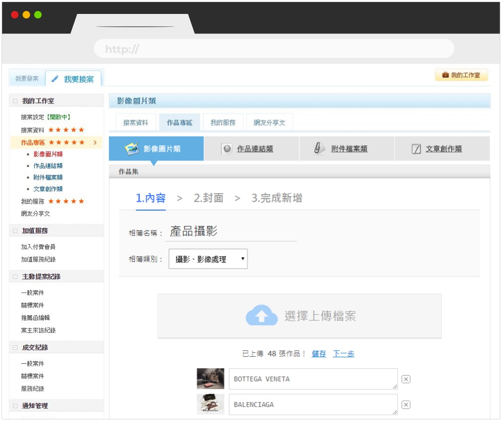
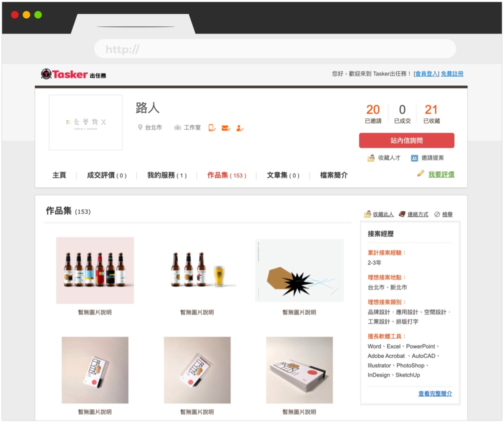
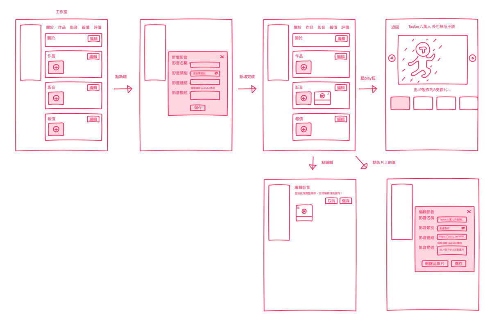
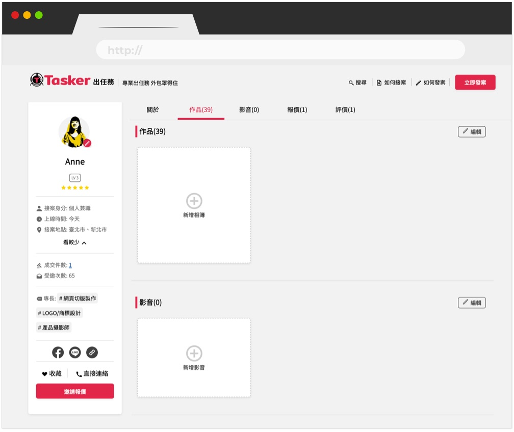
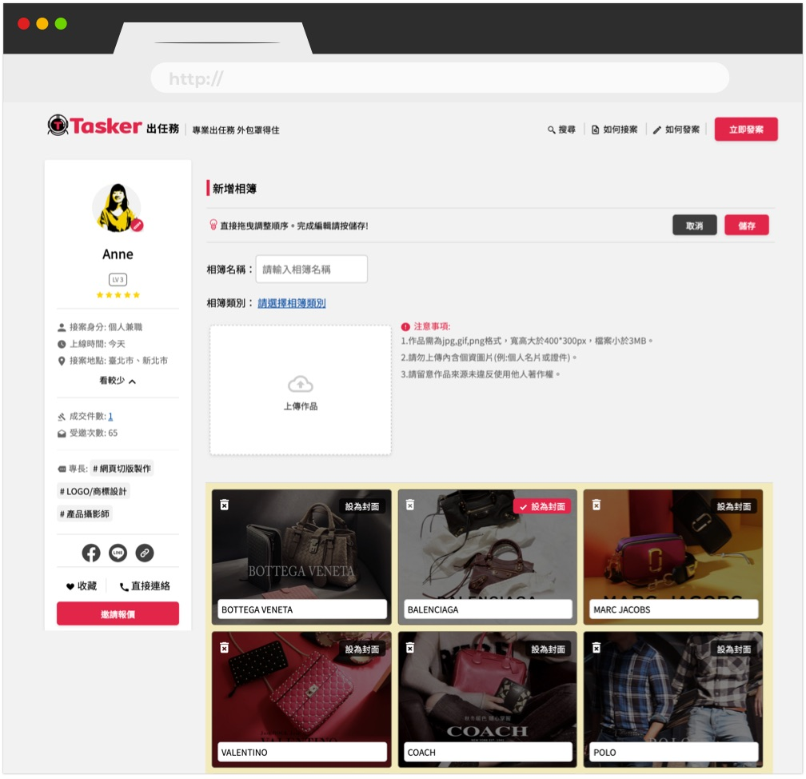
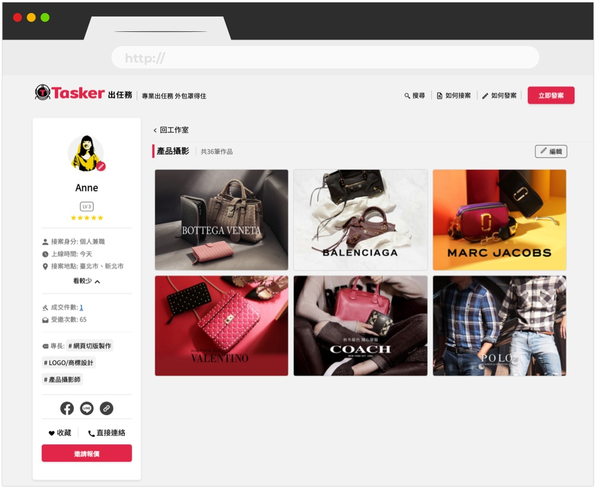
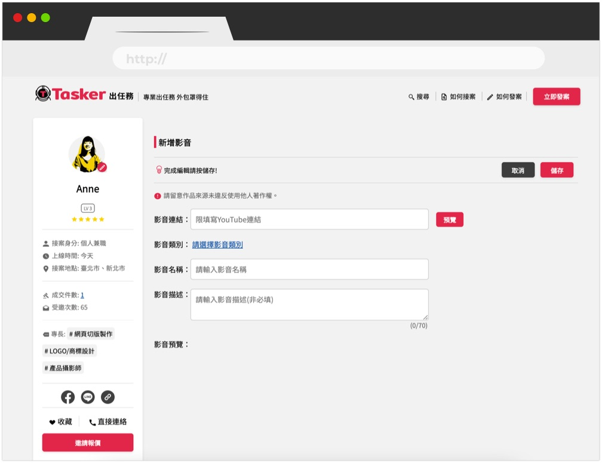
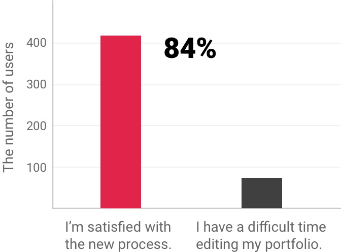
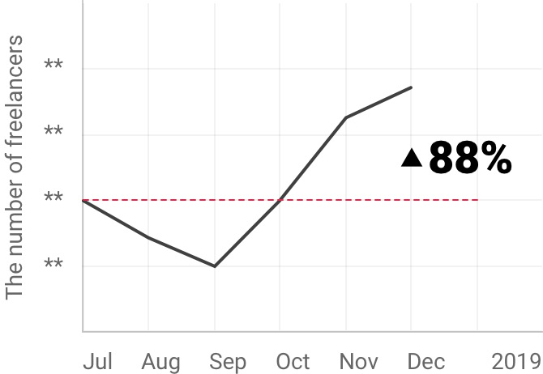

By organizing the feedback given by freelancers, I discovered several problems that freelancers have encountered while editing their portfolios on Tasker:
- Freelancers could not freely arrange the order of their artwork.
- Freelancers did not have a preview before publishing their portfolios.
- Freelancers wanted to showcase their videos.


Solution
1. Enable freelancers to easily drag and drop their artwork and freely arrange the order.
2. Allow freelancers to edit their portfolios in published mode, so they could see how it would look before they publish the portfolios.
3. Enable freelancers to embed YouTube videos by simply pasting the link to their videos.
Then, I designed wireframes and a user flow to discuss with developers:

Mockup
Users can create or edit their artwork album in published mode. First, click the create-a-new-album button and then choose images from a computer.

While creating a new album, users can drag and drop the images to arrange the order.


While creating a new video, users can embed their videos on YouTube.

Result


We also received some positive feedback:
“The new artwork upload process is way easier to use than the previous one.”
“I am so glad that I can showcase my films on Tasker.”
“The new portfolio page makes my artwork look even better.”